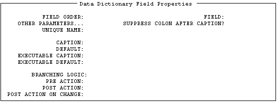
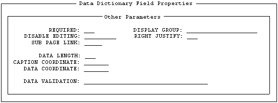

| Contents: | Main | Chapter | See Also: | Getting Started Manual | Advanced User Manual | |||
To edit the properties of a field:
The specific form that is invoked depends on the type of the selected field. For example, the form for editing DATA DICTIONARY fields looks like this:

When you enter a value at the "FIELD:" prompt for DATA DICTIONARY fields, the Form Editor automatically defines the Caption as the field's label:
At the "CAPTION:" prompt, you can:
| Shortcuts at the CAPTION Prompt | |
| To define the caption as | Enter at the CAPTION prompt |
| Field label | !L |
| Field title | !T |
| Unique name of field | !U |
| Duplicated string | !DUP(string,number of occurrences) For example, !DUP("-",79) |
The "OTHER PARAMETERS:" prompt is followed by an ellipsis (...) to indicate that this field leads to a new page. To view that page, navigate to the Other Parameters field and press the Enter/Return key. A "pop-up" window appears where you can edit additional properties of the field.

To close the Other Parameters "pop-up" window, press <PF1>C. To return to the Form Editor's Main Screen, press <PF1>E to exit and save your changes, or press <PF1>Q to quit the form without saving your changes.
As described above, you can press <PF4> to invoke a ScreenMan form to edit the caption and data length of fields. You can also edit these properties directly from the Form Editor's Main Screen.
To change the caption of a field, position the cursor over the caption, and press <PF3>. You can then edit the caption with the same editing keys available in ScreenMan's Field Editor. Press the Enter/Return key when you are finished editing the caption.
To change the data length of a field, position the cursor over the data portion of the field, and press <PF3>. You can then increase and decrease the data length by pressing <ARROW RIGHT> and <ARROW LEFT>. An indicator (L=n) at the lower right portion of the Main Screen indicates the current data length. Press the Enter/Return key when you are finished editing the data length.
After creating and arranging all the fields on a block, you can quickly make the Field Order of all the fields equivalent to the tab order by doing the following:
Remember that the Field Order is the order in which the elements on the block are traversed when the user presses Enter. The <PF1>O key sequence reassigns Field Order numbers to all the elements on the block, so that the Enter key takes the user from field to field in the same order as the Tab key (left to right, top to bottom).
NOTE: If you refer to fields by Field Order in places, such as Branching Logic, Pre Action, and Post Action, reordering the fields on the block could cause that code to refer to the wrong fields. You must then modify the code to either reflect the new Field Order numbers or refer to those fields by Caption or Unique Name instead.
Reviewed/Updated: May 2026